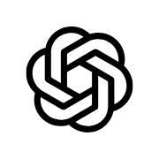

Sworn
Say it.
Sworn checks if it's true.
A voice agent that checks what your team says about security against what your systems actually show.

Arjav Mehta and Karthik Kandaswamy, LoxeAI. Bolna Symphony Buildathon.
Say it.
Sworn checks if it's true.
A voice agent that checks what your team says about security against what your systems actually show.
Arjav Mehta and Karthik Kandaswamy, LoxeAI. Bolna Symphony Buildathon.

It holds each claim, the checks behind it, the owner's response and the wording for every framework.
The signature proves nobody edited the record. The checks are what make it true.


Talks, but can't check anything
Talks and checks
Answers from documents
Checks systems, asks by form

Sworn
Voice in, live checks out
Compliance platforms pull data from systems, but they reach people through forms and dashboards.
Trust centers answer buyers from documents. Some now do it over MCP, but none of them checks the claims.
Chatbots can rephrase an engineer's words but can't check them.
None of the 25+ GRC, trust and audit vendors we reviewed offers voice.
LoxeAI competitive review, Oct 2026 (vendor sites and press). SafeBase is now part of Drata.